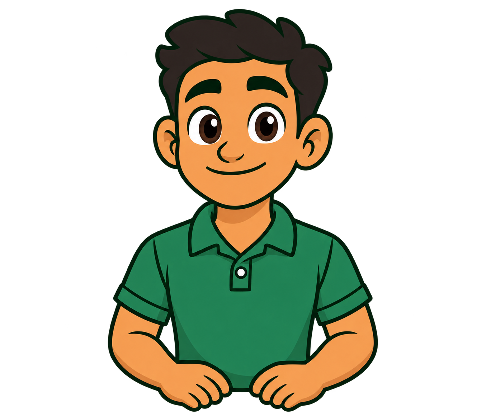
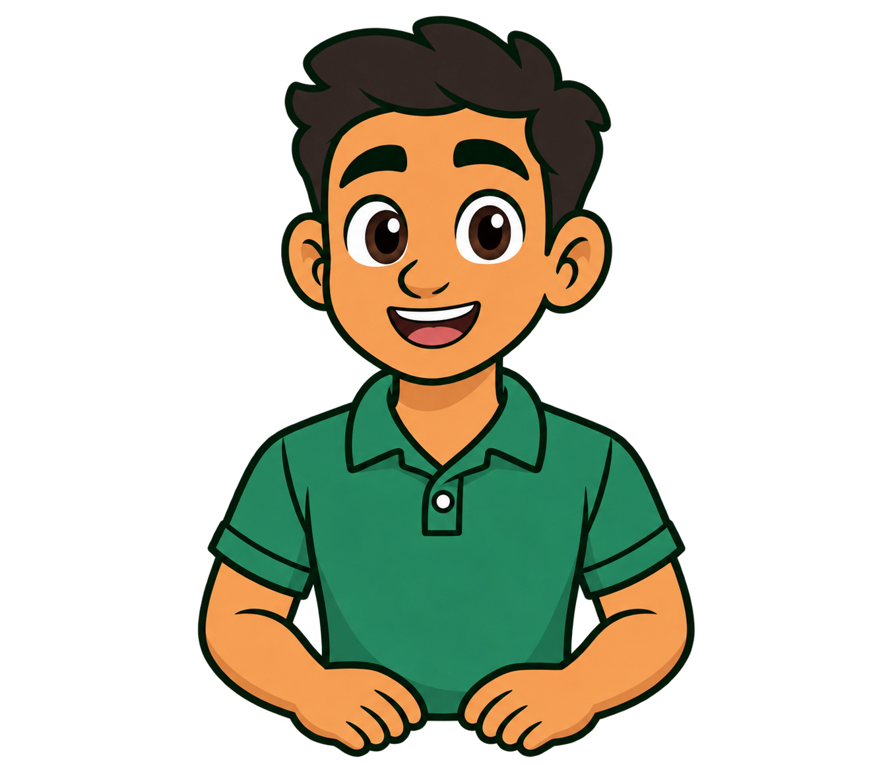
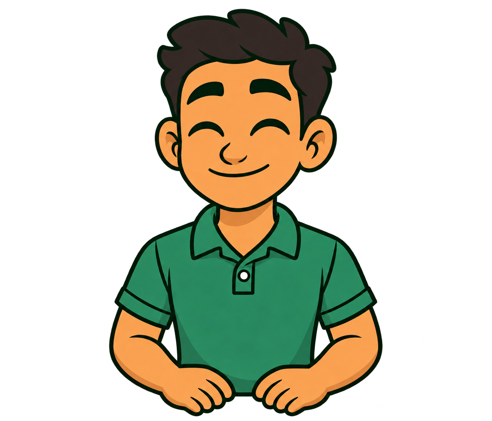
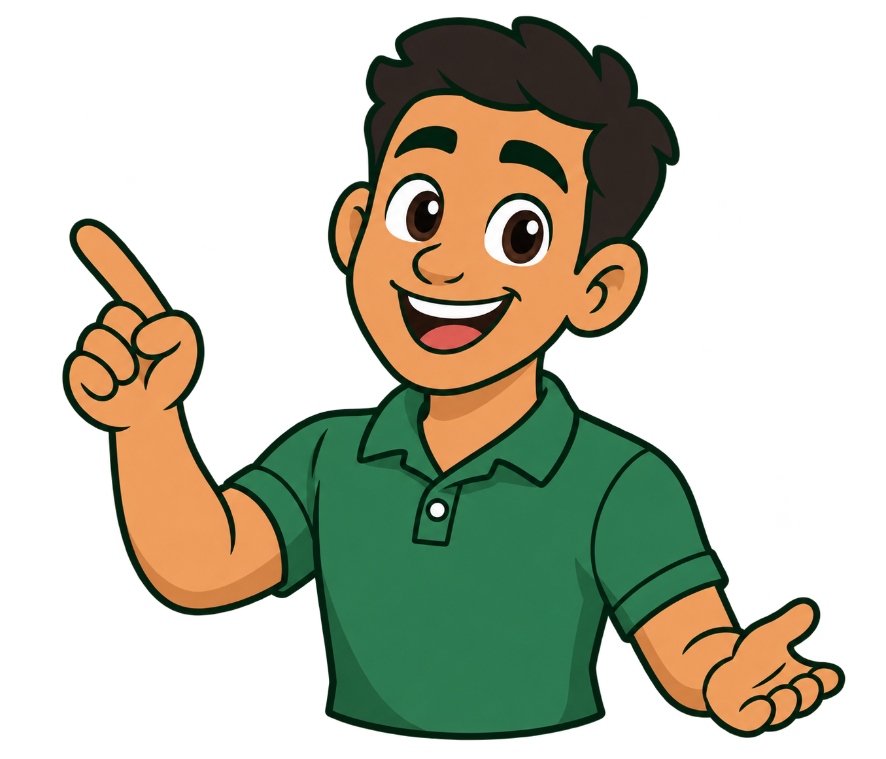
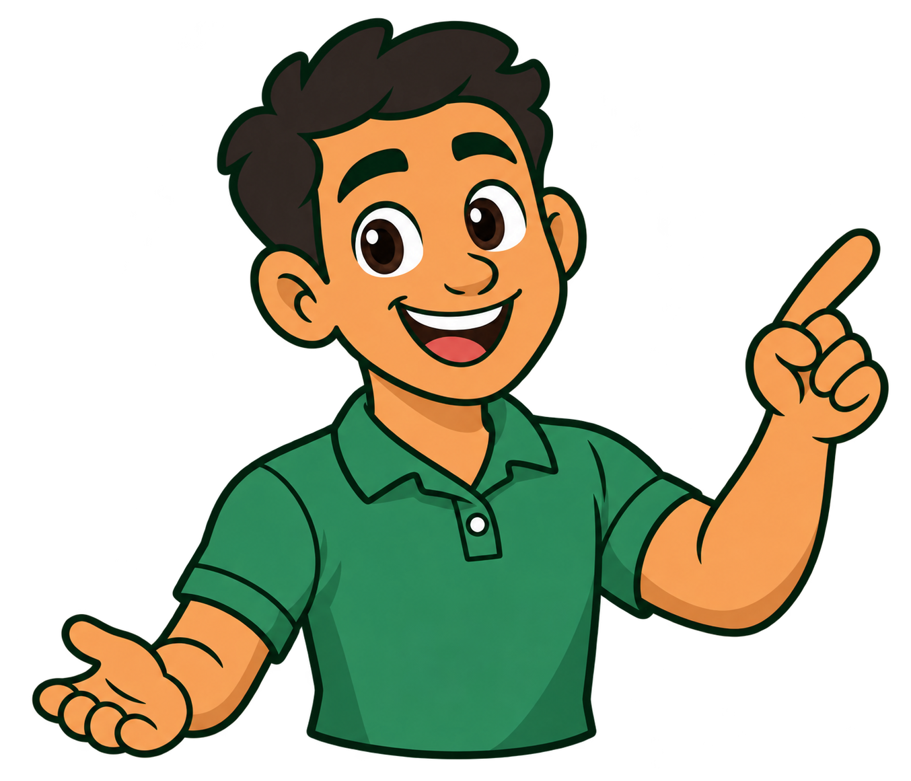

Assistente Raiz · poses cartoon
Estudo visual separado do PDV. PNGs com transparência. Prévia de fala sem áudio e piscada por troca de quadros.



Esta é uma primeira prova de movimento. Os quadros ainda precisam de alinhamento fino antes da integração.

Apontar à esquerda

Apontar à direita